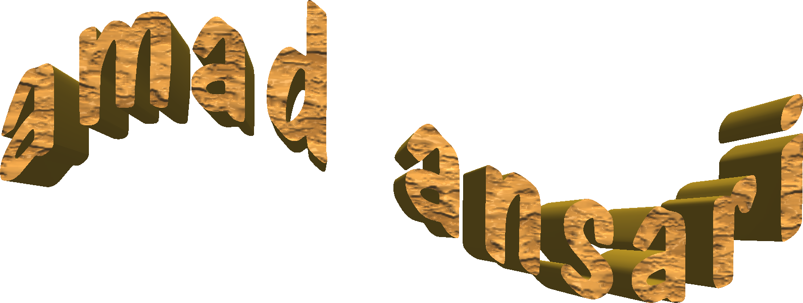

<!DOCTYPE html PUBLIC "-//W3C//DTD XHTML 1.0 Transitional//EN" "http://www.w3.org/TR/xhtml1/DTD/xhtml1-transitional.dtd">

<!-- Minimal Theme designed by Artur Kim (http://arturkim.com) for Tumblr | version 1.5 -->

<html/>
<head>
<style>

body {
    background-image: url("Clouds.png");
    background-repeat: repeat-xy;
}
</style>
</head>
<body>

<p></p>
<br>

welcome to my site! I am a student interested in software, creative coding,<br> art conservation + archival, among other things, based in brooklyn, ny. <br>
<br>

current:<br>
<br>

Computer science + art history @ New York University<br>
<br>
Research @ <a href="https://www.guggenheim.org">Guggenheim CCBA</a><br>
<br>
Intern @ <a href="https://www.printedmatter.org">Printed Matter</a><br>
<br>

<a href="https://www.linkedin.com/in/amad-ansari-902b6a11a/">
  
</a>

<a href="mailto:aaa911@nyu.edu">
  
</a>


</html>